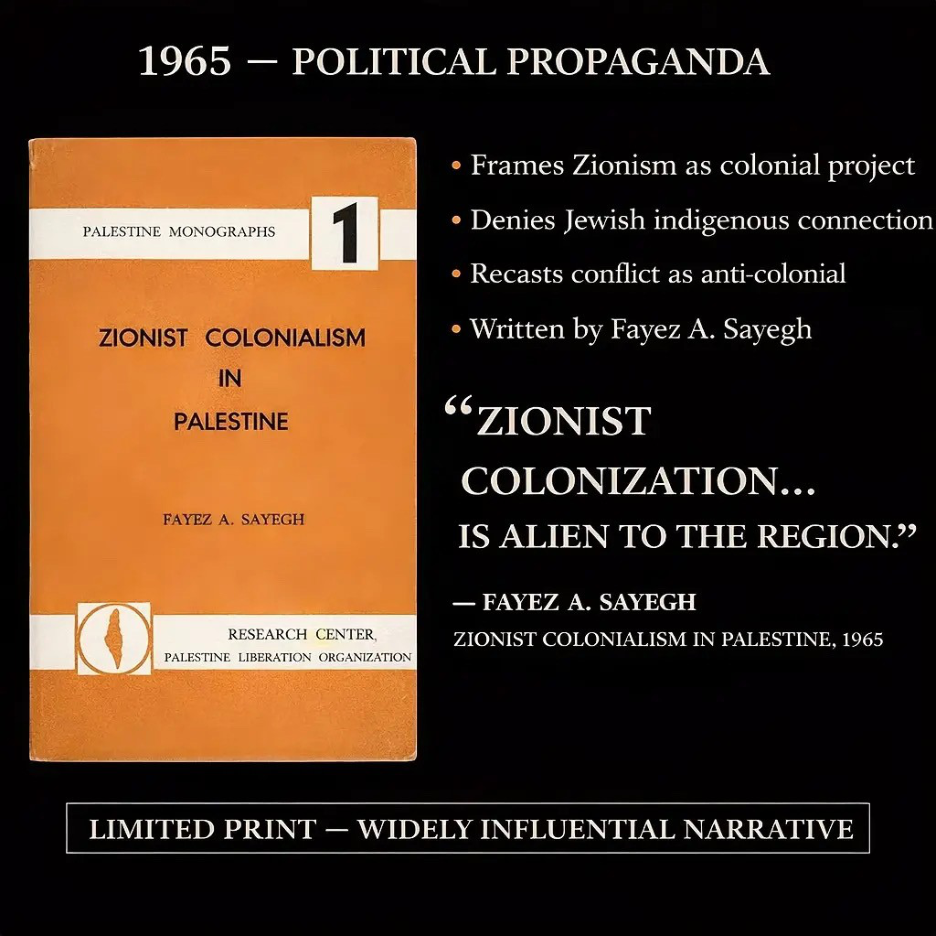
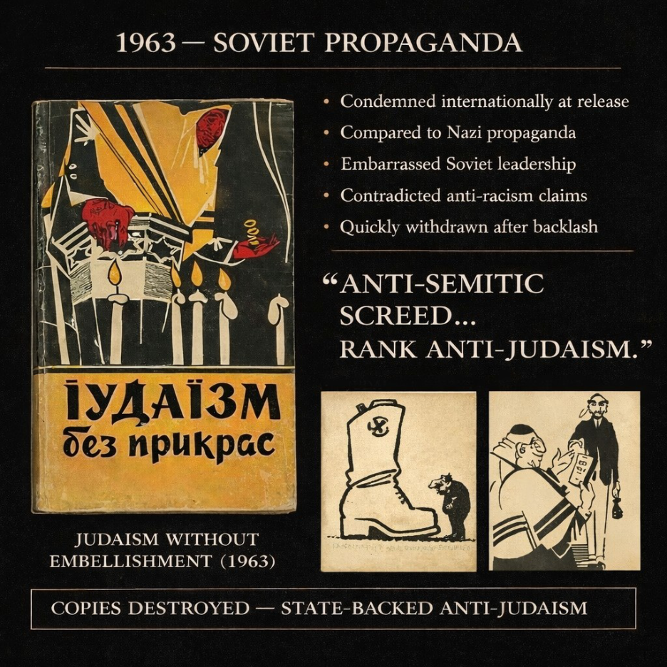
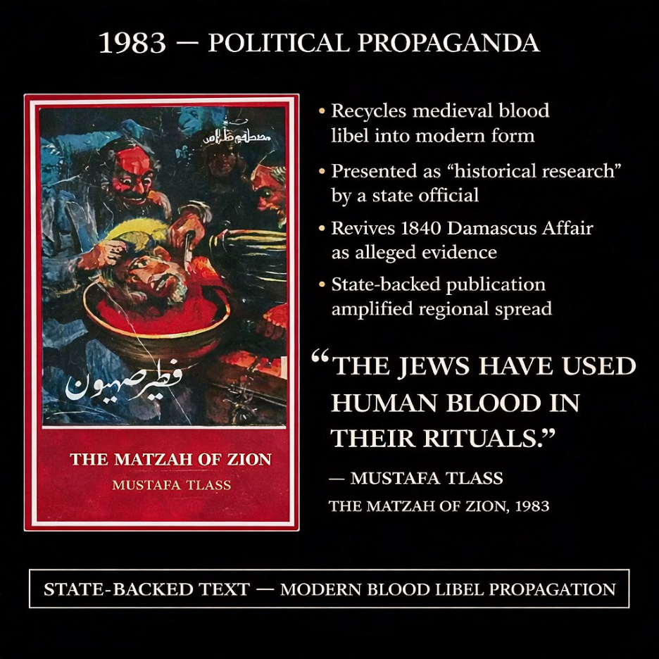
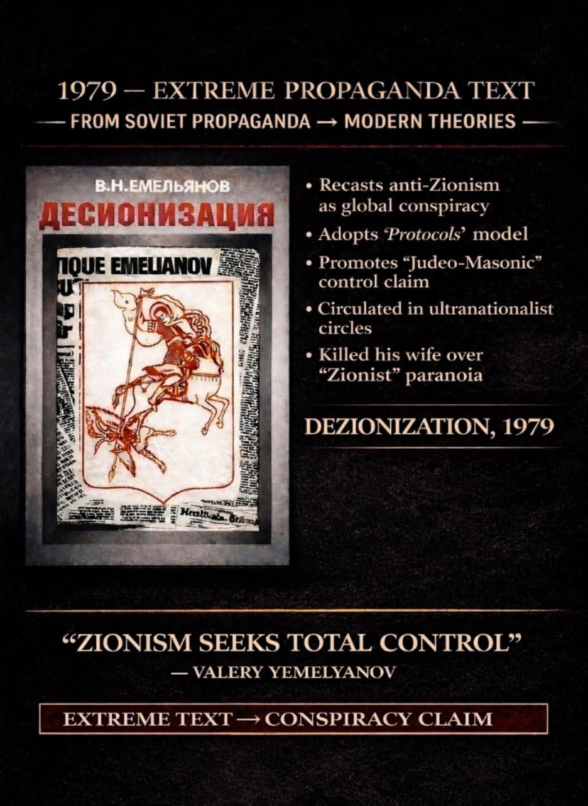
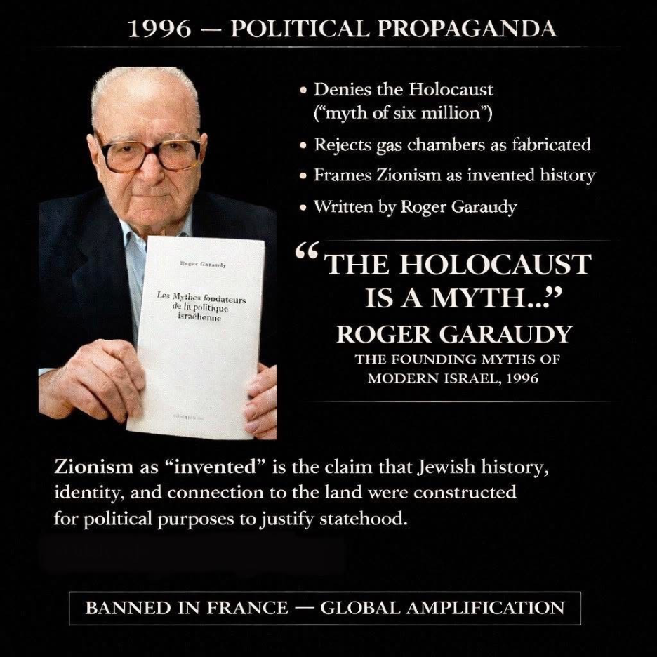
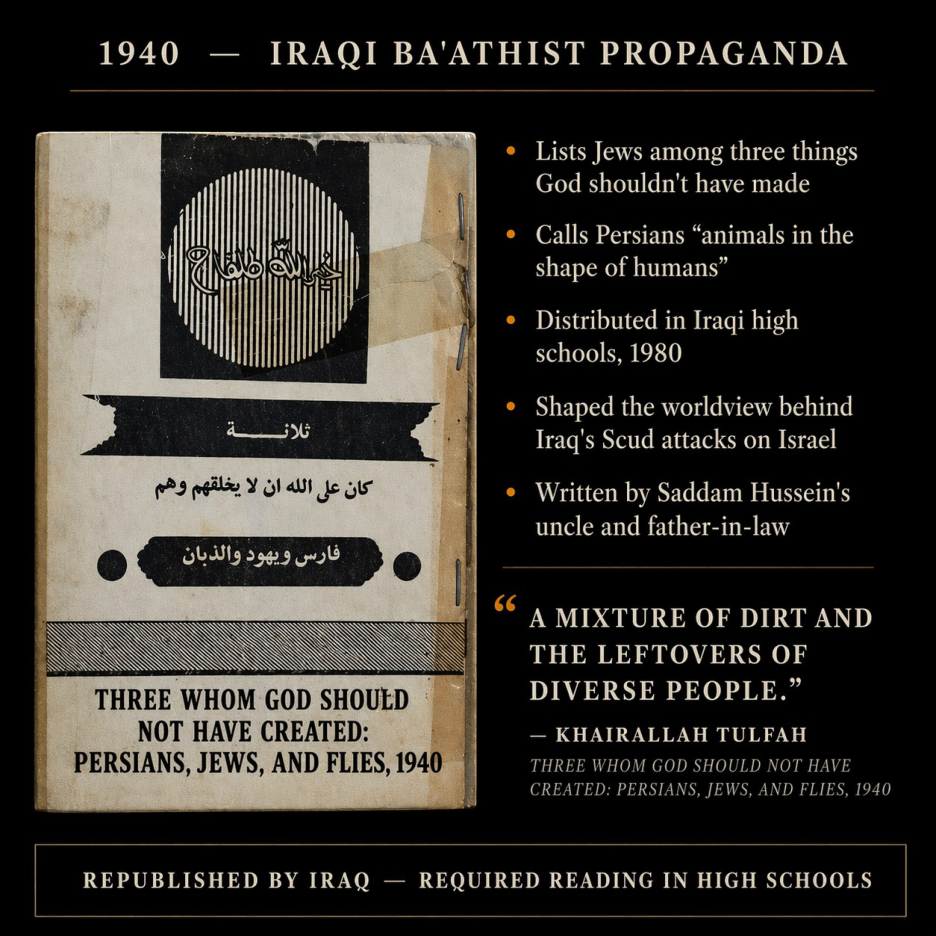
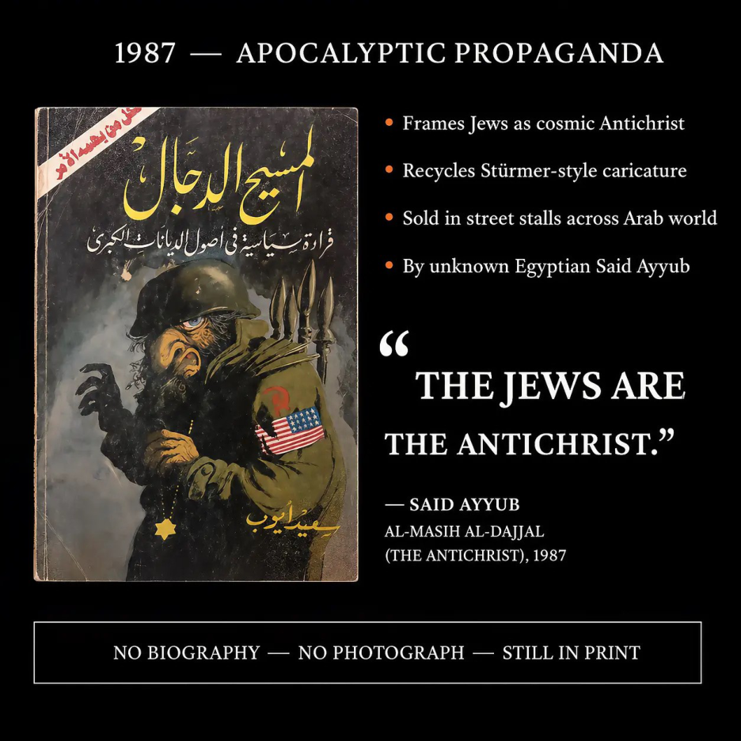

Click any box to jump to the full writing section for that figure.

Fayez Sayegh
The Most Dangerous Man You’ve Never Heard Of
1965 — Political Propaganda
Trofim Kichko
The Jew Expert Who Had Never Met One
1963 — Soviet Propaganda
Mustafa Tlass
The Man Who Thought Schindler’s List Needed an Answer
1983 — Political Propaganda
Valery Yemelyanov
He Killed His Wife Over Zionism and the Russians Said Calm Down
1979 — Extreme Propaganda Text
Roger Garaudy
Protestant, Catholic, Communist, Muslim, Holocaust Denier. Wrong-Way Driver.
1996 — Political PropagandaJohann von Leers
I Always Feel Like Jews Are Watching Me
1934 — Nazi Propaganda
Khairallah Tulfah
The Fly Got More Sympathy Than the Jew
1940 — Iraqi Ba’athist PropagandaMahmoud Abbas
The President with the Soviet Holocaust-Denial PhD
1984 — Political Propaganda
Said Ayyub
The Author With No Face
1987 — Apocalyptic PropagandaAnwar al-Jundi
Ctrl+C, Ctrl+Zionism
1970s — Ideological SystemFayez Sayegh
The Most Dangerous Man You’ve Never Heard Of
Fayez Sayegh was born in 1922 in Syria, the son of a Presbyterian minister—a detail worth mentioning, well, because I want to mention it. He grew up in Tiberias and went to school in Safed, both in mandated Palestine. He earned his PhD from Georgetown, taught at Yale, Stanford, and Oxford, and served as Kuwait’s UN delegate. Interesting, yes, but kind of a boring resume so far.
What isn’t known is that he came up in the Syrian Social Nationalist Party, a fascist organization whose founder Antun Saade modeled himself on Hitler. He called himself al-Zaim (the Arab version, of, you guessed it), and built a movement around a swastikalike emblem and Nazi-ideology. Sayegh wasn’t a sidekick in this. Sayegh got expelled when Saade returned from exile and purged him—it seems he didn’t leave on principle.
I was kind of hoping he at least did that. His 1965 pamphlet “Zionist Colonialism in Palestine” is more influential than you can realize. Sure, it erases Jewish indigeneity, ignores the Mizrahi majority, and forces itself in Third World liberation, but technically it did “work.” Published by the PLO’s own press— basically propaganda—it was massively cited in Western universities as scholarship.
He built the PLO Research Center, which drew Mahmoud Darwish and Ghassan Kanafani. The resolution he authored—UN 3379 “Zionism is Racism”—was his monumental achievement. It was revoked in 1991. Sayegh’s argument borrows the European settlercolonialism framework—developed in part to describe British extraction of resources in Africa and the French in Algeria—and applies it to Zionism.
In his model, Jews are European settlers arriving on foreign soil to displace an indigenous Arab population, making the Zionist project like French Algeria or British Kenya. He identifies what he calls the defining features of settler-colonialism—displacement, land seizure, demographic replacement, and the erasure of native culture—and argues that Zionism satisfies the criteria.
What made this powerful, in my opinion, wasn’t its complexity. It was its simplicity: one analogy, cleanly applied, that got rid of the entire history of the Jewish connection to the land in a single category. It gave the global left ready-made terms—settler, colonizer, indigenous, resistance—that required no engagement with Jewish history. Just the analogy. I’m sure you’ve all heard it.
His name is nowhere: his theory is everywhere. Every SJP chapter, every BDS resolution, every settlercolonialism chant is reciting Fayez Sayegh without knowing it. A Syrian Christian fascist-trained propagandist Oxford Professor became the invisible hand of progressive antizionism.
Trofim Kichko
The Jew Expert Who Had Never Met One
Trofim Kichko was born in 1905, joined the Party at 23, and got arrested by the NKVD (Russian secret police) before the war. He was held for a year, released for lack of evidence, and spent 1941–44 in Nazi-occupied territory. By 1957 he was reinstated and was teaching Marxism- Leninism in Kiev. A man with a genuinely chaotic biography and no discernible expertise needed a subject.
He picked Jews. He wasn’t Jewish. He had no training in religious studies. The American Jewish Committee noted, with some heavy restraint, that he had become the leading Ukrainian specialist on all things Jewish. By 1962 he’d defended a dissertation on the reactionary role of Judaism and graduated from the Academy of Sciences. His book was the Protocols of the Elders of Zion 2.0: Judaism Without Embellishment.
But what made it different wasn’t the argument. It was the pictures. The caricatures opened with a rabbi clutching a sack of gold coins—imagery compared directly to Der Stürmer. Izvestia called it a work of distinction and distributed it nationwide. Academically certified, statesponsored, nationally distributed Jew-hatred. Western communist parties—French, Italian, American, Norwegian—publicly condemned it, which is one of the weirdest sentences the Cold War produced.
Pravda announced the author had “wrongly interpreted some questions” and the illustrations “might even be interpreted in the spirit of anti- Semitism”—befor adding “There is no such thing as anti-Semitism in the USSR and cannot be.” Book withdrawn. Kichko disgraced. Then the 1967 war happened and someone in Moscow remembered they had a guy. In January 1968, Kichko received a state honor for his achievements in atheistic propaganda.
The sequel appeared that same year at 60,000 copies, five times the original—taking whole sections from the first book. He spent the rest of his life writing a newspaper column called “Careful: Zionism” and delivering the same lecture on the reactionary essence of Judaism to party committees until he died in 1982, fully rehabilitated, with a diploma on the wall.
The man who survived Nazi occupation under a false name spent 25 years arguing that the people who’d been hiding their names for centuries were the real threat. There’s a word for that. He developed a significant part of the vocabulary of Soviet antizionism: Zionists as Nazi collaborators, as racists bent on extermination, early types of the apartheid and genocide libels that are back in full swing.
Mustafa Tlass
The Man Who Thought Schindler’s List Needed an Answer
Mustafa Tlass was Syria’s Defense Minister for thirtytwo years, a signer of mass death warrants, suppressor of dissidents, and, in his own estimation, one of history’s great romantics. He wrote poetry, published histories, ran his own publishing house, and professed his love for Madonna and Jennifer Lopez. Renaissance man—signing executions between sonnets and marveling that a Beirut bomber had “succeeded in sending 200 American Marines to hell”—Tlass was a real gem.
In 1983 he published The Matzah of Zion—presenting the 1840 Damascus blood libel as a fact, arguing Jews ritually murder Christian priests and children to use their blood in baking Passover matzah. One of the covers depicts Jewish caricatures, severing a non- Jew’s head into a bowl (the one here). If you don’t know, in 1840 Jews in Damascus were accused of murdering a Catholic priest to use his blood for baking Passover matzah—tortured into confessions, imprisoned, and internationally condemned until Moses Montefiore appealed directly to the Ottoman Sultan, who investigated, declared it false, and ordered everyone released.
In the year of my birth, 1983, Syria’s Defense Minister published a book arguing the Sultan got it wrong. He called it scholarship, claimed archival sources, reprinted it multiple times, and never retracted a word. When brought to Bush, the VP at that time, he called it “outrageous and repugnant” and hurled it across the room. That should be the review on the back cover.
Although it could be that Bush thought he was asked to read. The blood libel in this cartoonish plot, is depicted as verified history. Tlass’ publishing house also printed the Protocols of the Elders of Zion. Running the blood libel and the Protocols from the same building isn’t dabbling—it’s a program. The man was obsessed with the stupid blood libel. At the UN in 1991, a Syrian delegate recommended it from the floor as “valuable,” claiming it “unmasked the racist character of Zionism.” Thirty countries filed formal protests.
One book, one afternoon, one UN endorsement and one international incident. When asked if it was antisemitic, Tlass said something like “World Zionism calls anyone who speaks truth antisemitic.” The man who wrote that Jews murder children to make bread was the victim. He also claimed Jordan was “South Syria,” yelled with joy when Saddam launched Scuds at Israel, and called Arafat the son of 60,000 whores.
His memoirs outraged Bashar al-Assad personally. In them he credited himself with bringing both Assads to power, and included graphic romantic prose of his love encounters. Ugh. His son Manaf, a Republican Guard general, defected in 2012. His other son Firas fled to Egypt in 2011 calling for the Ba’ath Party to surrender. The man who built the regime died in Paris in 2017, his children in exile from everything he constructed, his book still in print.
Schindler’s List had won seven Oscars. As we all know, it documented the horrors of the Shoah—and the 8 Middle Eastern countries banned it as “Zionist propaganda.” The answer to this propoganda was announced by Egyptian producer Munir Radhi. Guess what it was. A film adaptation of The Matzah of Zion. Seriously.
Thankfully it was never made. Let’s just say his book and life are ridiculous. The whole bloody lot of it.
Valery Yemelyanov
He Killed His Wife Over Zionism and the Russians Said Calm Down
Valery Yemelyanov was a Soviet Arabist—a graduate of Moscow’s Institute of Oriental Languages, teacher of Arabic and Hebrew, former assistant to Nikita Khrushchev. The credentials were real. What he did with them was not. “Dezionization” first appeared in 1979 as installments in the Syrian Ba’ath Party newspaper Al-Ba’ath— published at the personal request of Hafez al-Assad.
The Soviet fringe conspiracy theorist and the Syrian dictator found each other and decided to work together. A match made in Atlantis. A PLO-branded photocopy of the text circulated simultaneously in Moscow. Same book, two covers, one mission. The argument: the true history of humanity is a hidden struggle between pagans and degenerate Jewish Zionists. Solomon created the conspiracy to seize global power by the year 2000.
Solomon’s Temple worshipped the devil and practiced human sacrifice. Christianity was invented by Jews to enslave Slavic peoples. Jesus was a Jewish racist and a Mason who Christianized Russia. Yeah. It’s a whole thing. Yemelyanov lost his prestigious position at the Institute in Moscow after the book’s publication abroad. He wasn’t just antizionist: He was antianything that touched Slavic civilization since the pagans.
Yemelyanov was sent to an asylum after being accused of murdering his wife. The stated motive: suspicion that she was collaborating with the Zionists. I personally hate when that happens. He killed his wife because he thought she was working for Jews. He was released in 1986 and appeared at a trial wearing a T-shirt with “De- Zionization” printed in Slavic letters on the front and Hebrew letters on the back.
Then he joined Pamyat. One of Pamyat’s founders, he attempted to merge religious neo-Paganism with Russian neo-Nazism—until he split with the movement’s leader over a single theological point: the leader believed Zionists were destroying Christianity, while Yemelyanov believed Christianity itself was a Zionist imposition. He was too extreme for the Russian ultranationalists.
They parted ways over who hated Christianity more. He died in Moscow in 1999. The man who murdered his wife over Zionist paranoia, got committed, got released, wore his book title as a T-shirt to a public trial, briefly led a fascist movement, and got expelled for being too extreme—built ideas that fed directly into post-Soviet Russian ultranationalism and networks still operating today.
Roger Garaudy
Protestant, Catholic, Communist, Muslim, Holocaust Denier. Wrong-Way Driver.
Roger Garaudy was post-war France’s leading Communist philosopher—he was deputy speaker of the National Assembly, and a man incapable of staying in any belief-system longer than a decade. Protestant at 14. Catholic later. Communist for thirty years until they threw him out for praying too much. It was liberation theology after that. Presidential candidate under his own platform.
Then Islam—where he converted at a Geneva center controlled by the Muslim Brotherhood, with a name change to Raja. A reviewer of his book hilariously called him “an ideological wrong-way driver.” In 1986 Saudi Arabia gave him its King Faisal Award for Service to Islam. He thanked them by denying the Holocaust. His 1996 book “The Founding Myths of Modern Israel” called the Holocaust “the myth of the six million,” denied the gas chambers, and argued Zionism had fabricated the whole of Jewish history.
But the Holocaust denial was almost incidental to the larger argument—one that sounds familiar today: Zionism is a colonial project. Israel was founded on ethnic cleansing. The Jewish lobby controls American foreign policy. The Holocaust has been weaponized by Jews as cover for Israeli crimes. Every word of that is standard campus antizionism. He was convicted in 1998 under France’s Gayssot Law —which makes it criminal offense to deny crimes against humanity per the London Charter of 1945.
The evidence against the gas chamber denial is airtight—Nazi blueprints labeled “Gaskammer,” cyanide residue in chambers, and Nazi officers on record saying anyone who denied it was “crazy.” The Institute for Historical Review—the vile organization that published his book in English offered $50,000 to anyone who could prove the gas chambers existed. They paid out when an Auschwitz survivor sued them.
Oh the joy I feel about that. Garaudy called it a myth anyway. France convicted him and fined him 240,000 francs. Unfortunately it was the best thing that ever happened to him. Egypt and Jordan welcomed him as a hero—huge receptions, galas, standing ovations. In Tehran, President Khatami and Supreme Leader Khamenei saw and praised him personally. The Syrian mufti wrote a letter read aloud at a gala in Doha.
Garaudy addressed it by satellite telephone. He called in to his own solidarity gala. France tried to suppress the book and handed it to the entire Arab world instead—his trial made him a Holocaust denial martyr across the Middle East. He died in 2012 at 98. The wrong-way driver made it to the end of the road.
Johann von Leers
I Always Feel Like Jews Are Watching Me
Johann von Leers had a resume that reads like a CIA brief: University of Jena professor, SS officer, Goebbels’s pet propagandist, and author of twentyseven books all making the same argument. His 1933 “Juden sehen dich a”—Jews Are Watching You—was exactly what it sounds like: a paranoid pamphlet about the unseen enemy lurking in your café, your bank, your government.
His 1934 “Rassische Geschichtsbetrachtung” (Racial Historical Observation) upgraded the paranoia to a global scale. He said Zionism was a transnational force secretly running world history. As early as 1938 he was warning German schoolteachers that Jews threatened not just the Reich but also the Arabs. Twenty years later he was broadcasting that exact line from Egypt.
The man was nothing if not consistent. In 1945 he did what any self-respecting Nazi did when the Reich collapsed: he ran. Italy first, then Argentina via the ratlines, where he lived under Perón’s protection editing Der Weg, the Nazi diaspora’s magazine. While in Buenos Aires he was already moonlighting for the Egyptian embassy, writing antisemitic material on contract.
Egypt was paying him before he even bought a plane ticket. When Perón fell in 1955, Haj Amin al-Husseini personally arranged his trip to Cairo. Von Leers landed, converted to Islam, and renamed himself Omar Amin in tribute to his patron. He kept his entire ideology and translated the bibliography. A Nazi with a new name and the same product. In 1956 the Egyptian government made him propaganda advisor at the Ministry and put him in charge of Nasser’s Institute for the Study of Zionism— a real institution with real letterhead, run by a man who had previously written for Goebbels.
A 1957 CIA report observed that he was “advocating an expansion of Islam in Europe in order to bring about stronger unity through a common religion.” Goebbels’s propagandist was drafting an Islamizationof-Europe strategy from a desk in Cairo in 1957. The biographical details are something else. A 1965 CIA report named him “head of ODESSA in Cairo”— the underground SS network.
Israeli spy Wolfgang Lotz, the Champagne Spy, used to drink at von Leers’s house. The man writing Egypt’s destroy-Israel propaganda was hosting Mossad at dinner. When he suspected West German surveillance he sent his wife and daughter as couriers. Germany spent a decade asking for his extradition. Nasser, who had a Nazi running his propaganda department, declined every request with the diplomatic equivalent of “no thanks.” Von Leers died of a heart attack in Cairo in 1965–protected, salaried, unrepentant.
His legacy is the cleanest transmission line in this whole series. Goebbels to Perón to Nasser. Racial theory to political theory. “Jewry” to “Zionism.” Every argument in modern antizionism that treats Israel as a civilizational threat instead of a state, has von Leers somewhere in its family tree.
Khairallah Tulfah
The Fly Got More Sympathy Than the Jew
Khairallah Tulfah was a Ba’ath Party official, Iraqi army officer, and the maternal uncle—and father-inlaw—of Saddam Hussein. He raised Saddam from age ten and became the single biggest influence on the man who would gas the Kurds, invade Kuwait, and spend thirty years making the Middle East significantly worse off. Saddam said so himself. In a 1988 interview with the London Arabic magazine Al-Tadamon he stated: “My uncle used to speak at home in a nationalist spirit, so my thinking was inseparable from the nationalist outlook.
The nation’s problems lived in my conscience, and therefore the party lived in me when I joined it.” The dictator gave his uncle the credit. The uncle earned it. Tulfah was removed from the Iraqi army for backing the 1941 pro-Nazi coup and spent five years in a British prison for it. He came out unrepentant, returned to Tikrit, took in his traumatized ten-year-old nephew, and started writing.
What he wrote was ten pages. Just ten pages. And they shaped the foreign policy of a nation. “Three Whom God Should Not Have Created: Persians, Jews, and Flies” describes Persians as “animals God created in the shape of humans” and Jews as “a mixture of dirt and the leftovers of diverse people.” The flies got the most generous treatment— Jews got a some horrible verdict.
In 1980, as the Iran-Iraq War kicked off, the Iraqi Ministry of Education republished it and distributed it as a high school textbook—printed by the government press Dar al-Hurriyya, “Abode of Liberty.” Children in Iraqi classrooms learned Jews were leftovers and Persians were animals. Saddam had the title phrase etched into a plaque on his desk. Con Coughlin concluded Saddam’s foreign policy “was determined by his hatred of the Persians and the Israelis.” Ten pages.
One desk plaque. Two wars. Hundreds of thousands dead. That wasn’t even his only book. In 1982 Tulfah wrote the closing commentary to an Arabic translation of The Jews Are Behind Every Crime—a Protocolsderived tract arguing a Jewish-Masonic-Illuminati conspiracy had been engineering world history since the eighteenth century. Just by the title alone, I think I would know what it’s about.
Tulfah agreed with it. Marx and Freud were expressions of Jewish bestiality. Darwin was a Jewish conspiracy. Modernization was a Jewish plot. And the Beatles—he named them specifically—were a Jewish tool deployed to destroy Arab civilization. The man whose nephew ran Iraq and whose son ran its military was afraid of the Beatles. When Saddam took power he made Tulfah governor of Baghdad and then fired him for corruption so flagrant it embarrassed even the Ba’athist regime.
The man who raised a dictator got fired by the dictator for stealing too much. His son Adnan became Defense Minister and ran the military through the Iran-Iraq War—the war the pamphlet justified. His daughter Sajida became Saddam’s wife. The pamphlet sat on the president’s desc. Tulfah died in 1993 having never retracted a word. God created flies. Tulfah just ranked them above the Jews—and at least gave them a fair hearing first.
Mahmoud Abbas
The President with the Soviet Holocaust-Denial PhD
You know his name. You don’t know any of the rest of it. I didn’t. I’m breaking protocol, because he’s neither obscure nor has a big book. But he literally ties together everything this series is about: Russian propaganda, Nazi beliefs, conspiracies, and antizionism. So let’s go. In 1982, a 47-year-old Palestinian named Mahmoud Abbas defended his doctoral thesis at the Institute of Oriental Studies of the Soviet Academy of Sciences in Moscow—a department founded to conduct “scientific criticism of Zionism”—Zionology.
The director was Yevgeny Primakov, the same Primakov who ran Operation INFEKTION, the Soviet campaign that planted the lie that the CIA invented HIV. Abbas’s adviser was an Arabist with no expertise in Zionism, Nazism, or the Holocaust. Neither did the four-man committee. The defense, by the adviser’s own account, went smoothly. Not a single objection. Two years later the dissertation was published in Amman as: الوجه اآلخر العالقات السرية بين النازية والصهيونية—“The Other Side: The Secret Relationship Between Nazism and Zionism.” It has never been translated into any other language.
The book argues that the figure of six million murdered Jews is a “fantastic lie,” that the real number was “a few hundred thousand,” and that Zionist leaders collaborated with the Nazis to engineer the Holocaust as a tool to manufacture sympathy for a Jewish state. In September 2016 the Mitrokhin Archive at Cambridge yielded a second receipt. Under the heading KGB recruiting efforts in 1983: Krotov— Abbas, Mahmoud, born 1935 in Palestine, member of the central committee of Fatah and the PLO, in Damascus—agent of the KGB.
Krotov is Russian for the mole. The case officer in Damascus during the recruitment was Mikhail Bogdanov—now Vladimir Putin’s envoy to the Middle East and the man Putin sends to for meetings between Abbas and Israeli prime ministers. Then there is Munich. In his 1999 memoir From Jerusalem to Munich, Abu Daoudo—planner of the 1972 massacre that murdered eleven Israeli athletes— wrote that the funds were provided by Mahmoud Abbas.
He repeated it in Sports Illustrated and on Al- Jazeera. He believed the Oslo handshake on the White House lawn would not have been possible if Israel known. When Abu Daoud died in 2010, Abbas sent his family a public telegram of condolence praising “the great fighter.” His family is its own document. The eldest son, Mazen, dropped dead in Doha at 42–which is why his father is Abu Mazen, a “kunya” (“father of” “mother of”) for a son who predeceased him.
The two surviving sons, Yasser and Tareq, hold a combined estimated $300 million. Yasser owns Falcon Tobacco, which holds a monopoly on American-made cigarette sales in the Palestinian territories. The 2016 Panama Papers showed the other brother Tareq holding a million dollars in shares of an offshore company. Abbas’s personal net worth is estimated at $100 million.
The European Court of Auditors found the PA mismanaged 2 billion euros between 2008 and 2012. The U.S. Congress held hearings titled Chronic Kleptocracy. The aid kept flowing.
And then there is the Israel part, which is a trip. Abbas was born in Safed, a town some accounts say his father’s family entered through Jewish-rabbinic ancestors who converted to Islam after the 1837 earthquake. His brother Omar flew from Doha to Tel Aviv repeatedly for cancer treatment at Assuta Medical Center until he died in 2016. His wife Amina had leg surgery at Assuta during the 2014 Gaza war.
His brother-in-law had life-saving heart surgery there in October 2015–while Abbas was in Europe accusig Israel of ethnic cleansing. Abbas himself is hospitalized in Israeli facilities when his health fails. The man who wrote the dissertation arguing Zionism manufactured the Holocaust depends on the Jewish state to keep his family alive. The body of work has been consistent.
In 2018 he told the Palestinian National Council that Hitler killed Jews because of their “social behavior” as moneylenders. In August 2022, asked to apologize for Munich, he answered: “I have 50 holocausts that Israel committed.” The German police opened a criminal investigation for Volksverhetzung and it was closed because Abbas enjoys diplomatic immunity. In August 2023 he repeated the moneylender thesis.
He has been President of the Palestinian Authority since 2005–the twentieth year of a four-year term. There have been no elections. Every other figure in this series operated on the margins. The Nazi schoolteacher. The Soviet whose book got pulled. The Iraqi uncle whose pamphlet circulated in high schools. The French ex-Communist convicted in a Paris courtroom.
They did their damage from outside the rooms where decisions were made. Abbas is the room.
Said Ayyub
The Author With No Face
There is no biography of Said Ayyub. No Wikipedia entry in any language. No birth date, no death date, no hometown, no employer, no photograph in circulation. Daniel Pipes wrote a 6,000-word essay on his work in 1996 and could not produce a single biographical fact beyond he is Egyptian and he keeps publishing. He is the most influential Arab apocalyptic author of the late twentieth century, and he might as well be a pen name.
The cover of his 1987 book is the introduction. A bearded, hooked-nose caricature stares out from under a military helmet. A yellow Star of David sits on his chest where the Nazis put one on the Jews of Europe. An American flag patch on his sleeve is stamped with a question mark. His hands are clawed and raised. Daggers float behind him in the dark. It’s Der Stürmer with Arabic type.
The same visual grammar Julius Streicher used in 1934 to teach German children what a Jew looks like, reissued in Cairo in 1987 to teach Arab teenagers the same lesson. The book insides delivers what the cover advertises. The thesis is total. The Dajjal—the Islamic Antichrist— is not a future figure but a force operating throughout all of recorded history under one ethnic identity.
The Jews. The Apostle Paul was the Dajjal’s first agent. The Crusades were the Dajjal’s. The Reformation, the French Revolution, Marxism, capitalism, Freemasonry, the United Nations, modern technology—all of it the his machinery, all of it run by the Jews on behalf of the false messiah. The State of Israel is the staging ground for his arrival. The Star of David on its flag is the mark by which the deceived will know their master.
The book sold in Egyptian street stalls, Saudi airport shops, Gulf supermarkets. It was passed from hand to hand in mosques. By the mid-1990s it had spawned a whole subgenre—Daud’s Beware the False Messiah, Abdallah’s The Great Earthquake of the Earth, ash- Shahawi’s The Antichrist and Gog and Magog—all built Ayyub’s load-bearing assumption. The Hamas Charter was drafted in 1988, one year after The Antichrist appeared.
The charter opens with the same hadith Ayyub had just spent 200 pages weaponizing—the rocks and the trees that will call out to Muslims to kill the Jews hiding behind them. It cites the Protocols as fact. It frames the Palestinian struggle not as a national conflict over land, but as a phase in a cosmic war. Ayyub did not write the Hamas Charter. He gave it the vocabulary in which it could be written.
Then he vanished back into whatever he came from. No death notice. No obituary. No surviving students. The man who taught a generation of Arabic readers that the flag flying over Jerusalem is the brand of the devil left no trace of his own face. Only the cover—the Stürmer caricature with the yellow star and the daggers— the books on the shelves, still selling.
I think. Maybe the cover is a portrait and that’s his only image? We may never know.
Anwar al-Jundi
Ctrl+C, Ctrl+Zionism
Anwar al-Jundi (1917–2002) worked as a mid-level cultural producer embedded in Egypt’s post-1952 publishing infrastructure—journals, state-friendly presses, and library distribution. His early output in the 1940s–50s focused on literary criticism and polemics against figures he saw as importing Western categories into Arabic thought. After the 1967 war, his writing shifts sharply in volume and tone: titles multiply, subjects converge, and a single explanatory frame begins to dominate.
“Zionism and the Jewish Personality” (1970s) would be his One Big Book. It’s segmented into short units —often one to three pages—each carrying a selfcontained claim that can be excerpted. The sourcing pattern is consistent: a Qur’anic or Biblical citation a historical vignette (often → decontextualized) a contemporary example a → → concluding generalization.
Perfect for prooftexting and easy transmission. The “personality” he construct operates as a template for future portrayals. Traits are assigned first— cohesion, long-range planning, adaptability, preference for indirect or institutional influence— paired with negative attributions like manipulation and secrecy. He’s also still typical: He promotes the medieval "Synagogue of Satan" trope and the "Khazar myth," to argue that Zionism had created a "manufactured," schizophrenic Jewish personality.
He claimed this "artificial" identity was a tool for a global cabal to orchestrate "white genocide" and control the world’s economy through a "secret dictionary" of definitions. Hey, at least he didn’t think Jews were white. He also thought women’s liberation was a colonial weapon and viewed every modern literary trend as a calculated plot. al-Jundi spent his life in a libraryturned-bunker, mapping out a paranoid "dictionary of the enemy" that fused religious history with modern conspiracy to defend the "purity" of the Arab mind.
He was the Kaczynski of Jewish conspiracy. His influence is diffuse but traceable. Writers such as Muhammad Galal Kishk and Anis Mansour echo the same essentialism in more accessible prose, carrying it into mass readership. In religious and sermonic fashion, figures like Ali al-Kourani translate the style into theological language, preserving the structure while shifting vocabulary.
Anwar al-Jundi did not treat Arabic as a language. He treated it as a besieged organism. In his telling, it was “alienated,” abandoned, infiltrated, reshaped by Westernized forms. Orientalists were not scholars— they were operators, altering vocabulary and style to sever Muslims from their sources. He cites Carl Brockelmann to sharpen the threat: the Qur’an preserved Arabic more completely than any language in history—so any change is not evolution, it’s corruption.
He wrote like a man cataloging an invasion. Over 200 books, many multi-volume, built almost entirely alone —indexing, cross-referencing, reusing, expanding. No team, no pause. Just accumulation. Nothing was too small. A vowel shift could signal defeat. A borrowed word could mark displacement. For al-Jundi, language was not descriptive. It was evidence of control.
His importance to this series is structural. Earlier figures supply content—racial theory, conspiracy, colonial language. Al-Jundi standardizes it. He turns those elements into a repeatable engine: one personality, one system, one adversary. After him, the ideas no longer need to be reinvented. They only need to be reapplied. They are the complete psychological archetypes for the Zionist and Israel.